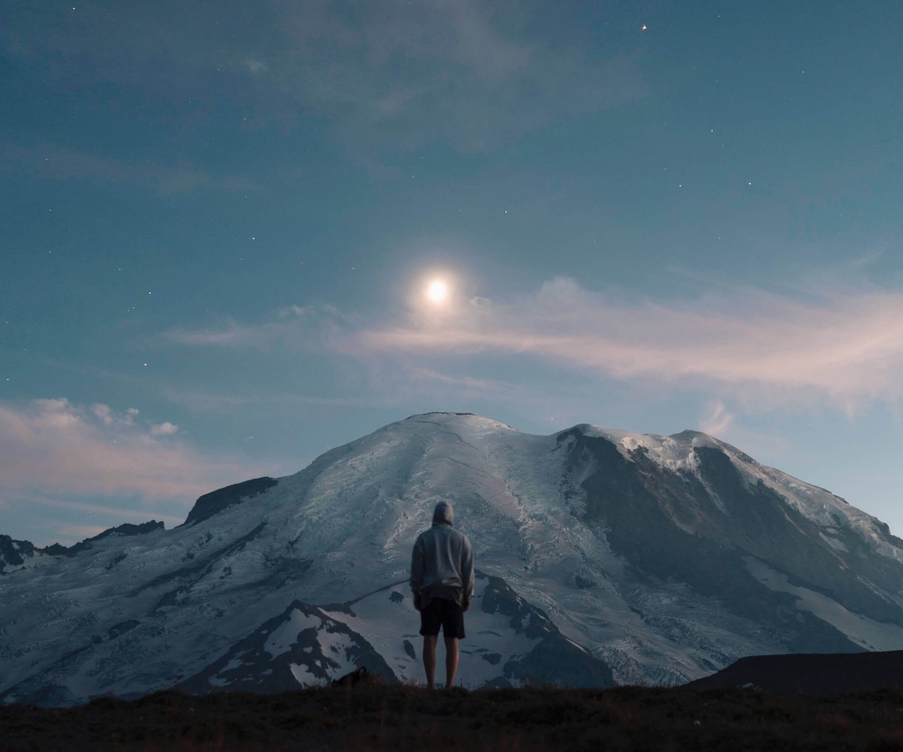
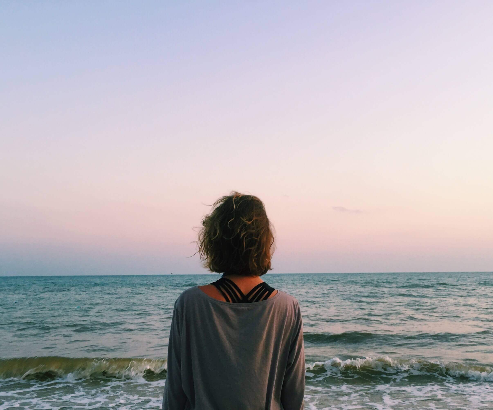

Поеду в лес
Лес — экологическая система, биоценоз, в которой главной жизненной формой являются
деревья.
Лес — составная часть природы, понятие «лес» можно рассматривать на разных уровнях.
В глобальном масштабе — это часть биосферы, в локальном — это может быть насаждение. Леса занимают около трети
площади суши.

Поеду в горы
Горные системы занимают 64 % поверхности Азии, 36 % — Северной Америки, 25 % —
Европы, 22 % — Южной Америки, 17 % — Австралии и 3 % — Африки. В целом 24 % земной поверхности приходится на
горы. 10 % всех людей живёт на территории гор. В горах берёт своё начало большинство рек Земли.

Поеду на Чёрное море
Я уплыву туда, где ни разу я не был, туда, где никто раньше не был. Никто и никогда
раньше не был, я уплыву. Я позову тебя смотреть на синее небо и пить по капле синее небо, и падать в это синее
небо, я позову.
Уеду я на Чёрное-Чёрное море, на Чёрное-Чёрное море, на Чёрное-Чёрное море уеду я.
Уеду я на Чёрное-Чёрное море, на Чёрное-Чёрное море, на Чёрное-Чёрное море.
Уеду я.